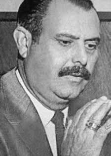

Henrique
Cintra
Ferreira
de Ornellas
CIRCUNSTÂNCIAS DA MORTE
Henrique Cintra Ferreira Ornellas foi morto no dia 21 de agosto de 1973, nas dependências do Quartel do 8º Grupo de Artilharia Anti-Aérea do Setor Militar em Brasília (DF). Foi preso em sua residência, em Arapoangas, Paraná, por agentes da Polícia Federal e do Exército, em uma operação realizada na noite do dia 16 de agosto de 1973.
Henrique encontrava-se de pijama, e sua casa foi vasculhada pelos agentes durante quase seis horas, tendo sido destruídos objetos e pertences pessoais, além dos agentes manterem seus filhos em um quarto, sob a mira de armas. A mesma operação resultou na prisão de outras pessoas da região, entre eles, dois advogados, um tabelião e seus filhos e dois comerciantes.
Inicialmente, os presos foram levados para o 30º Batalhão de Infantaria motorizada do Exército de Apucarana (PR), onde passaram a noite e, no dia seguinte, foram transferidos para Brasília (DF), num avião da Força Aérea Brasileira (FAB), algemados e encapuzados. Segundo os agentes policiais e militares, os presos estavam sendo acusados em inquérito da polícia federal, instaurado pelo Diretor Geral da Polícia Federal, Antônio Bandeira, de formação de quadrilha de assalto, corrupção, falsificação e homicídios, ligados à subversão.
O Comando Militar do 8ª Grupo de Artilharia Anti-Aérea, que custodiava Henrique em uma cela, afirmou que teria sido encontrado no dia 21 de agosto de 1973 sem vida, pendurado no basculante da janela do banheiro por três gravatas pretas e um cinto preto, trajando o mesmo pijama que estava no momento de sua prisão e contendo um maço de cigarros, um medicamento que havia sido receitado por um médico na prisão, uma toalha mofada e um par de alpargatas.
Tal versão foi noticiada à época em vários jornais e revistas. Na sequência de sua morte, foi instaurado um inquérito policial militar, sob a responsabilidade do major Wilson Pinto de Oliveira, com o objetivo de apurar a morte da vítima. De posse do laudo de exame cadavérico, realizado em 22 de agosto de 1973 e assinado pelos médicos legistas Hermes Rodrigues de Alcântara e Ary Louzada Gomes, além de depoimentos colhidos entre os agentes de estado que estavam na prisão de Henrique, o IPM foi finalizado no começo de setembro de 1973, tendo concluído que Henrique Cintra morreu de “asfixia por enforcamento, com fortes indícios de suicídio”.
A partir dessa conclusão, decidiu-se que não havia nenhum crime ou transgressão disciplinar a apurar. No inquérito policial da DPF, por seu turno, constava que as investigações tinham como objetivo apurar crimes ligados à subversão nos estados do Paraná, São Paulo, Goiás e Mato Grosso. Contudo, a apuração do envolvimento de Henrique com atividades criminosas careceu de comprovações às acusações, uma vez que suas atividades políticas de Henrique remontavam ao ano de 1963, quando houvera sido candidatado a vereador em Arapongas (PR), em oposição aos então governantes.
Passados quarenta anos da morte de Henrique Cintra, investigações realizadas pela CEMDP, pela CEV Rubens Paiva e pela CNV permitiram desconstruir a versão oficial. Nesse sentido, merece destaque laudo pericial da CNV, realizado em abril de 2014, a partir da documentação produzida à época e fotografias da vítima, que concluiu pela inexistência de enforcamento e, consequentemente, suicídio; que o diagnóstico diferencial do evento é de homicídio e que a vítima foi colocada no local em que foi encontrada, muito provavelmente, inconsciente, ou logo após o homicídio ter sido consumado.
Dessa forma, fica evidente que a vítima foi morta por agentes estatais e que, em seguida, toda uma operação de contrainformação foi realizada para dissimular as reais circunstâncias de seu assassinato. O enterro de Henrique Cintra Ferreira Ornellas foi realizado à época de sua morte, em Arapongas (PR).
Henrique Cintra Ferreira Ornellas was killed on August 21, 1973, on the premises of the Barracks of the 8th Anti-Aircraft Artillery Group of the Military Sector in Brasília (DF). He was arrested at his residence, in Arapoangas, Paraná, by agents of the Federal Police and the Army, in an operation carried out on the night of August 16, 1973.
Henrique was wearing pajamas, and his house was searched by agents for almost six hours, with objects and personal belongings destroyed, in addition to the agents keeping his children in a room, at gunpoint. The same operation resulted in the arrest of other people in the region, including two lawyers, a notary and his children and two traders.
Initially, the prisoners were taken to the 30th Motorized Infantry Battalion of the Army of Apucarana (PR), where they spent the night and, the following day, they were transferred to Brasília (DF), on a Brazilian Air Force (FAB) plane, handcuffed and hooded. According to police and military agents, the prisoners were being accused in a federal police investigation, initiated by the General Director of the Federal Police, Antônio Bandeira, of forming a gang of assault, corruption, forgery and homicides, linked to subversion.
The Military Command of the 8th Anti-Aircraft Artillery Group, which held Henrique in a cell, stated that he had been found lifeless on August 21, 1973, hanging from the bathroom window by three black ties and a black belt, wearing the same pajamas he was wearing at the time of his arrest and containing a pack of cigarettes, a medicine that had been prescribed by a doctor in prison, a moldy towel and a pair of espadrilles.
This version was reported at the time in several newspapers and magazines. Following his death, a military police investigation was launched, under the responsibility of Major Wilson Pinto de Oliveira, with the aim of investigating the victim's death. In possession of the cadaveric examination report, carried out on August 22, 1973 and signed by the coroners Hermes Rodrigues de Alcântara and Ary Louzada Gomes, in addition to statements collected among the state agents who were in Henrique's prison, the IPM was finalized at the beginning of September 1973, having concluded that Henrique Cintra died of “asphyxia due to hanging, with strong signs of suicide”.
Based on this conclusion, it was decided that there was no crime or disciplinary transgression to investigate. The DPF police investigation, in turn, stated that the investigations aimed to investigate crimes linked to subversion in the states of Paraná, São Paulo, Goiás and Mato Grosso. However, the investigation of Henrique's involvement in criminal activities lacked proof of the accusations, since Henrique's political activities dated back to 1963, when he had been a candidate for councilor in Arapongas (PR), in opposition to the then rulers.
Forty years after Henrique Cintra's death, investigations carried out by CEMDP, CEV Rubens Paiva and CNV allowed the official version to be deconstructed. In this sense, the CNV's expert report, carried out in April 2014, based on the documentation produced at the time and photographs of the victim, which concluded that there was no hanging and, consequently, suicide, deserves to be highlighted; that the differential diagnosis of the event is homicide and that the victim was placed in the place where he was found, most likely unconscious, or shortly after the homicide was completed.
In this way, it is clear that the victim was killed by state agents and that, subsequently, an entire counterintelligence operation was carried out to conceal the real circumstances of his murder. The burial of Henrique Cintra Ferreira Ornellas was held at the time of his death, in Arapongas (PR).
Henrique Cintra Ferreira Ornellas fue asesinado el 21 de agosto de 1973, en las instalaciones del Cuartel del 8º Grupo de Artillería Antiaérea del Sector Militar, en Brasilia (DF). Fue detenido en su residencia, en Arapoangas, Paraná, por agentes de la Policía Federal y del Ejército, en un operativo realizado la noche del 16 de agosto de 1973.
Henrique vestía pijama y su casa fue registrada por los agentes durante casi seis horas, destruyendo objetos y efectos personales, además de mantener a sus hijos en una habitación, a punta de pistola. La misma operación se saldó con la detención de otras personas en la región, entre ellas dos abogados, un notario y sus hijos y dos comerciantes.
Inicialmente, los detenidos fueron trasladados al 30º Batallón de Infantería Motorizada del Ejército de Apucarana (PR), donde pasaron la noche y, al día siguiente, fueron trasladados a Brasilia (DF), en un avión de la Fuerza Aérea Brasileña (FAB), esposados y encapuchados. Según agentes policiales y militares, los detenidos estaban siendo acusados en una investigación de la policía federal, iniciada por el director general de la Policía Federal, Antônio Bandeira, de formar una banda de asalto, corrupción, falsificación y homicidios, vinculada a la subversión.
El Comando Militar del Grupo de Artillería Antiaérea 8°, que retenía a Henrique en una celda, afirmó que había sido encontrado sin vida el 21 de agosto de 1973, colgado de la ventana del baño por tres corbatas negras y un cinturón negro, vestido con el mismo pijama que vestía al momento de su arresto y que contenía un paquete de cigarrillos, un medicamento recetado por un médico en prisión, una toalla mohosa y un par de alpargatas.
Esta versión fue publicada en su momento en varios periódicos y revistas. Tras su muerte, se inició una investigación de la policía militar, a cargo del mayor Wilson Pinto de Oliveira, con el objetivo de investigar la muerte de la víctima. En posesión del informe de examen cadavérico, realizado el 22 de agosto de 1973 y firmado por los médicos forenses Hermes Rodrigues de Alcântara y Ary Louzada Gomes, además de las declaraciones recogidas entre los agentes estatales que se encontraban en la prisión de Henrique, el IPM fue finalizado a principios de septiembre de 1973, habiendo concluido que Henrique Cintra murió por “asfixia por ahorcamiento, con fuertes signos de suicidio”.
Con base en esta conclusión, se decidió que no existía delito ni transgresión disciplinaria que investigar. La investigación policial del DPF, por su parte, afirmó que las investigaciones tenían como objetivo investigar delitos vinculados a la subversión en los estados de Paraná, São Paulo, Goiás y Mato Grosso. Sin embargo, la investigación sobre la participación de Henrique en actividades criminales carecía de pruebas de las acusaciones, ya que las actividades políticas de Henrique se remontaban a 1963, cuando era candidato a concejal en Arapongas (PR), en oposición a los entonces gobernantes.
Cuarenta años después de la muerte de Henrique Cintra, las investigaciones realizadas por el CEMDP, la CEV Rubens Paiva y la CNV permitieron deconstruir la versión oficial. En este sentido, merece destacarse el peritaje de la CNV, realizado en abril de 2014, con base en la documentación producida en su momento y fotografías de la víctima, que concluyó que no hubo ahorcamiento y, en consecuencia, suicidio; que el diagnóstico diferencial del hecho es homicidio y que la víctima fue colocada en el lugar donde fue encontrada, probablemente inconsciente, o poco tiempo después de consumado el homicidio.
De esta manera, queda claro que la víctima fue asesinada por agentes estatales y que, posteriormente, se llevó a cabo todo un operativo de contrainteligencia para ocultar las circunstancias reales de su asesinato. El entierro de Henrique Cintra Ferreira Ornellas se realizó en el momento de su muerte, en Arapongas (PR).